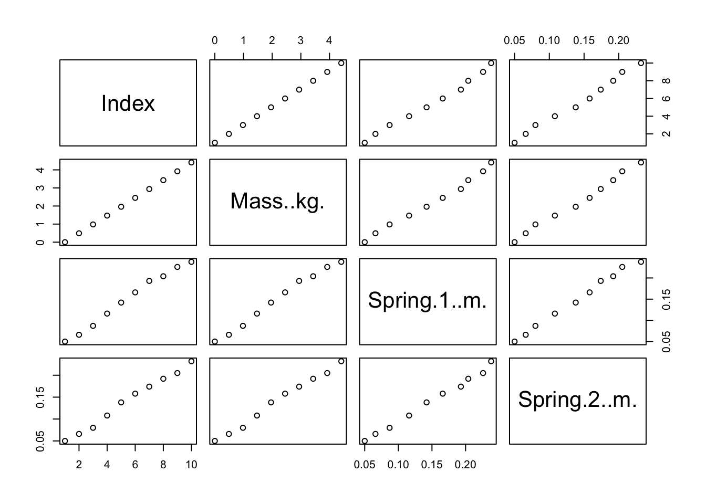

Last updated: 2019-10-21
Checks: 7 0
Knit directory: Homework3/
This reproducible R Markdown analysis was created with workflowr (version 1.4.0). The Checks tab describes the reproducibility checks that were applied when the results were created. The Past versions tab lists the development history.
Great! Since the R Markdown file has been committed to the Git repository, you know the exact version of the code that produced these results.
Great job! The global environment was empty. Objects defined in the global environment can affect the analysis in your R Markdown file in unknown ways. For reproduciblity it’s best to always run the code in an empty environment.
The command set.seed(20191020) was run prior to running the code in the R Markdown file. Setting a seed ensures that any results that rely on randomness, e.g. subsampling or permutations, are reproducible.
Great job! Recording the operating system, R version, and package versions is critical for reproducibility.
Nice! There were no cached chunks for this analysis, so you can be confident that you successfully produced the results during this run.
Great job! Using relative paths to the files within your workflowr project makes it easier to run your code on other machines.
Great! You are using Git for version control. Tracking code development and connecting the code version to the results is critical for reproducibility. The version displayed above was the version of the Git repository at the time these results were generated.
Note that you need to be careful to ensure that all relevant files for the analysis have been committed to Git prior to generating the results (you can use wflow_publish or wflow_git_commit). workflowr only checks the R Markdown file, but you know if there are other scripts or data files that it depends on. Below is the status of the Git repository when the results were generated:
Ignored files:
Ignored: .Rhistory
Ignored: .Rproj.user/
Note that any generated files, e.g. HTML, png, CSS, etc., are not included in this status report because it is ok for generated content to have uncommitted changes.
These are the previous versions of the R Markdown and HTML files. If you’ve configured a remote Git repository (see ?wflow_git_remote), click on the hyperlinks in the table below to view them.
| File | Version | Author | Date | Message |
|---|---|---|---|---|
| Rmd | b53e59e | simaaq | 2019-10-22 | add p-value information |
| html | c4253e1 | simaaq | 2019-10-22 | Build site. |
| html | 47b6254 | simaaq | 2019-10-22 | Build site. |
| Rmd | 5ab5221 | simaaq | 2019-10-22 | analysis for residual |
| html | adbc3d3 | simaaq | 2019-10-21 | Build site. |
| html | 429e52c | simaaq | 2019-10-21 | Build site. |
| Rmd | 6f05c01 | simaaq | 2019-10-21 | add more linear regression |
| html | 21daf4e | simaaq | 2019-10-20 | Build site. |
| html | d14ae40 | simaaq | 2019-10-20 | Build site. |
| Rmd | ff9c77f | simaaq | 2019-10-20 | linear regression added |
| html | a1a2f6c | simaaq | 2019-10-20 | Build site. |
| Rmd | 63e00f2 | simaaq | 2019-10-20 | Hooke’s law demo |
descriptive1 <- data[[2]]
descriptive2 <- data[[3]]
summary(descriptive1) Min. 1st Qu. Median Mean 3rd Qu. Max.
0.000 1.103 2.205 2.205 3.308 4.410 summary(descriptive2) Min. 1st Qu. Median Mean 3rd Qu. Max.
0.05000 0.09425 0.15400 0.14880 0.20125 0.23800 ##Here is the plot of all the data
plot(data)
##Here is the plot of the relationship between mass and spring1
head(data) Index Mass..kg. Spring.1..m. Spring.2..m.
1 1 0.00 0.050 0.050
2 2 0.49 0.066 0.066
3 3 0.98 0.087 0.080
4 4 1.47 0.116 0.108
5 5 1.96 0.142 0.138
6 6 2.45 0.166 0.158plot(data$Mass..kg., data$Spring.1..m., xlab = "mass", ylab = "spring1")
##Here is the plot of the relationship between mass and spring2
plot(data$Mass..kg., data$Spring.2..m., xlab = "mass", ylab = "spring2")
##Here is the plot of the relationship between spring1 and spring2
plot(data$Spring.1..m., data$Spring.2..m., xlab = "spring1", ylab = "spring2")
##Below is the simple linear regression between spring1 and spring2
spring1 = data$Spring.1..m.
spring2 = data$Spring.2..m.
reg<- lm(spring1~spring2)
plot(spring1,spring2, col="red", main = "spring1 and spring2 Regression", abline(reg), cex = 1.3, pch= 16, xlab = "spring1 length", ylab= "spring2 length")
| Version | Author | Date |
|---|---|---|
| 47b6254 | simaaq | 2019-10-22 |
summary(reg)
Call:
lm(formula = spring1 ~ spring2)
Residuals:
Min 1Q Median 3Q Max
-0.009353 -0.002666 -0.001058 0.002733 0.007981
Coefficients:
Estimate Std. Error t value Pr(>|t|)
(Intercept) -0.001986 0.004605 -0.431 0.678
spring2 1.074737 0.030238 35.542 4.3e-10 ***
---
Signif. codes: 0 '***' 0.001 '**' 0.01 '*' 0.05 '.' 0.1 ' ' 1
Residual standard error: 0.005663 on 8 degrees of freedom
Multiple R-squared: 0.9937, Adjusted R-squared: 0.9929
F-statistic: 1263 on 1 and 8 DF, p-value: 4.299e-10res<-residuals(reg)
mean(res)[1] -2.710505e-19median(res)[1] -0.001057566plot(res)
| Version | Author | Date |
|---|---|---|
| 47b6254 | simaaq | 2019-10-22 |
reg
Call:
lm(formula = spring1 ~ spring2)
Coefficients:
(Intercept) spring2
-0.001986 1.074737 print(summary(reg))
Call:
lm(formula = spring1 ~ spring2)
Residuals:
Min 1Q Median 3Q Max
-0.009353 -0.002666 -0.001058 0.002733 0.007981
Coefficients:
Estimate Std. Error t value Pr(>|t|)
(Intercept) -0.001986 0.004605 -0.431 0.678
spring2 1.074737 0.030238 35.542 4.3e-10 ***
---
Signif. codes: 0 '***' 0.001 '**' 0.01 '*' 0.05 '.' 0.1 ' ' 1
Residual standard error: 0.005663 on 8 degrees of freedom
Multiple R-squared: 0.9937, Adjusted R-squared: 0.9929
F-statistic: 1263 on 1 and 8 DF, p-value: 4.299e-10res.aov<- aov(spring1~spring2)
pVal <- anova(res.aov)$'Pr(>F)'[1]
summary(res.aov) Df Sum Sq Mean Sq F value Pr(>F)
spring2 1 0.04052 0.04052 1263 4.3e-10 ***
Residuals 8 0.00026 0.00003
---
Signif. codes: 0 '***' 0.001 '**' 0.01 '*' 0.05 '.' 0.1 ' ' 1##From the statistics above, we will see that the median residual is -0.0010576. This number is very small. And the p-value is 4.29917310^{-10}Thus the relationship between the spring one and two is not that important.
sessionInfo()R version 3.6.1 (2019-07-05)
Platform: x86_64-apple-darwin15.6.0 (64-bit)
Running under: macOS Mojave 10.14.5
Matrix products: default
BLAS: /Library/Frameworks/R.framework/Versions/3.6/Resources/lib/libRblas.0.dylib
LAPACK: /Library/Frameworks/R.framework/Versions/3.6/Resources/lib/libRlapack.dylib
locale:
[1] en_US.UTF-8/en_US.UTF-8/en_US.UTF-8/C/en_US.UTF-8/en_US.UTF-8
attached base packages:
[1] stats graphics grDevices utils datasets methods base
loaded via a namespace (and not attached):
[1] workflowr_1.4.0 Rcpp_1.0.2 digest_0.6.21 rprojroot_1.3-2
[5] backports_1.1.5 git2r_0.26.1 magrittr_1.5 evaluate_0.14
[9] rlang_0.4.0 stringi_1.4.3 fs_1.3.1 whisker_0.4
[13] rmarkdown_1.16 tools_3.6.1 stringr_1.4.0 glue_1.3.1
[17] xfun_0.10 yaml_2.2.0 compiler_3.6.1 htmltools_0.4.0
[21] knitr_1.25